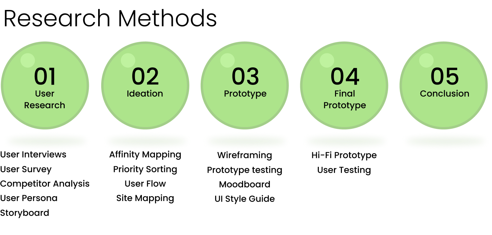

Project Description
Discover most reviewed cocktails near you and cocktail recipes in a way you’ve never experienced before. Our app provides you with an encyclopedia of the hottest cocktails of the season from bars and restaurants in your neighborhood. Don’t want to go out? No problem, Chaser app also offers a cocktail recipes with step by step instructions on how to make it at home!


My Role
User Research, wireframing, Interaction Design, Prototyping
Team
- Maxim Hull
- Taylor Lamb
- Nora Mehdikhani
- Vincent Radford
- Kenneth To
Tools Used
- Figma
- Miro
- Adobe CC
Research Methods
Step 01
User Research
User Interviews
Research Objectives

Objective 1
Understanding the user’s experience trying cocktails.
Objective 2
Learning the user’s decision making process when making a beverage at home.
Objective 3
What determines when and where A user decides to go out for a cocktail?